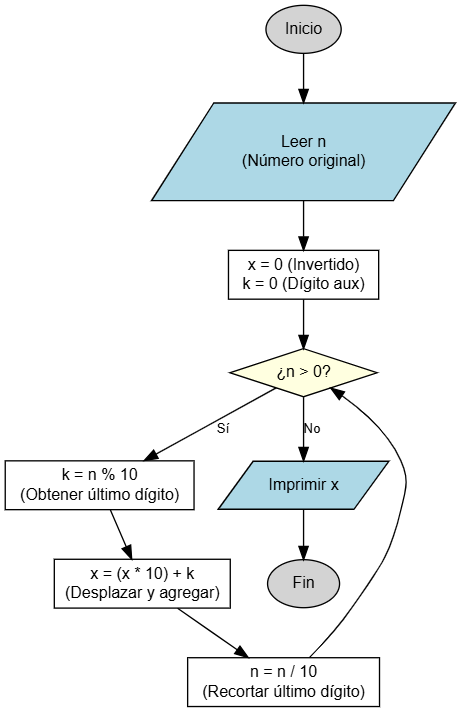

Descomposición de Dígitos
Manipulación matemática de números.
Este ejercicio resuelve un problema clásico de lógica algorítmica: invertir el orden de los dígitos de un número (por ejemplo, convertir 123 en 321) sin utilizar trucos de texto (String), sino puramente operaciones matemáticas dentro de un ciclo.

Objetivo
Crear un programa que lea un número entero positivo N y, mediante un ciclo while, construya un nuevo número X que contenga los mismos dígitos del original, pero en orden inverso.
Variables a Declarar
- N: tipo entero (
int) - El número ingresado por el usuario (se irá reduciendo en el proceso hasta llegar a 0). - X: tipo entero (
int) - La variable acumuladora donde se construirá el número invertido (debe inicializarse en 0). - K: tipo entero (
int) - Variable auxiliar para guardar temporalmente el último dígito extraído.
Operaciones a Realizar
- Leer el número entero positivo
N. - Inicializar
X = 0. - Iniciar un ciclo mientras
N > 0:- Obtener el último dígito de N:
K = N % 10. - "Empujar" los dígitos de X a la izquierda y agregar K:
X = (X * 10) + K. - Eliminar el último dígito de N:
N = N / 10.
- Obtener el último dígito de N:
- Al finalizar el ciclo, imprimir el resultado
X.
Resultado Esperado
Ingrese un numero entero: 1234 El numero invertido es: 4321 (Caso especial: Si ingresas 20, el inverso es 2)